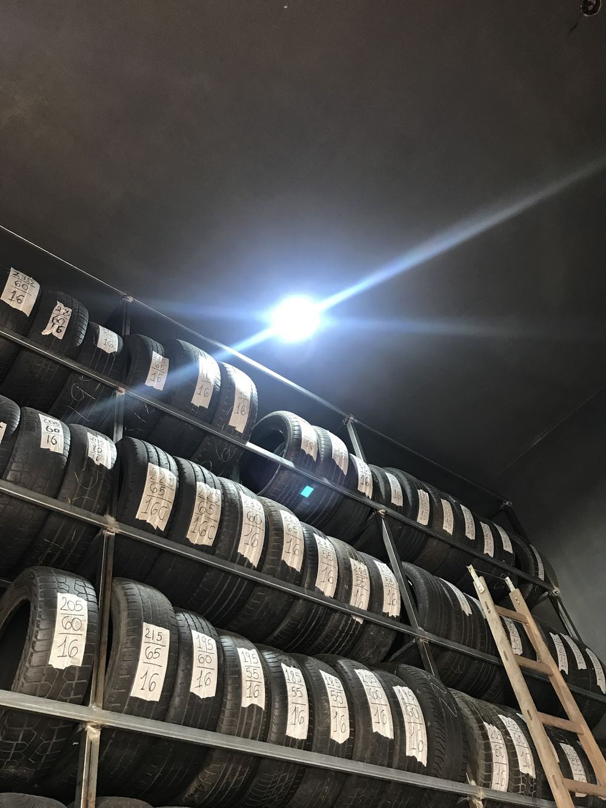
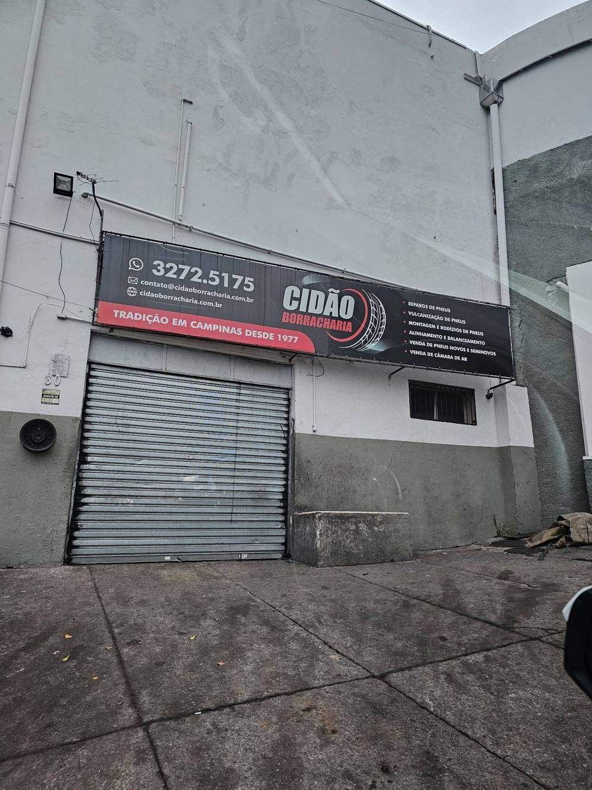

Desde 1977
Pneu furou? O Cidão abre até no domingo.
Quase 50 anos consertando pneu em Campinas. Reparo, vulcanização, alinhamento, balanceamento e pneus novos e seminovos, de bicicleta a caminhão, todos os dias da semana.
Atendemos
Se tem pneu, o Cidão cuida
Carrose utilitários
Motosde todos os aros
Caminhõese ônibus
Máquinase tratores
Bicicletaspneu e câmara
Carrinhosde armazém
Serviços
Do remendo ao jogo novo
- Reparo de pneusFuro, corte e prego: avaliamos e consertamos na hora.
- VulcanizaçãoRecuperação de pneus danificados com segurança.
- Montagem e rodízioTroca de posição para os pneus gastarem por igual.
- Alinhamento e balanceamentoCarro reto na pista e volante sem tremer.
- Pneus novos e seminovosEstoque à venda para resolver no mesmo lugar.
- Câmaras de arPara moto, bike, carrinho e máquina.

SeminovosPrateleira cheia, com a medida na etiqueta.
Nossa estrada
Quase meio século de borracharia
1977O Cidão abre as portas em Campinas.
DécadasGerações de clientes do Jardim do Trevo e região.
4,7 ★Mais de 300 avaliações no Google.
HojeAberto todos os dias, até no domingo.
Clientes
Quem roda, recomenda
Ótimo atendimento, serviço rápido e bem feito, a preços bons. Recomendo.Fernando · Google
Bons profissionais, educados, simpáticos e ótimo preço ao cliente!Avaliação no Google
Fazem todos os serviços e ainda têm pneus seminovos à disposição para venda!Avaliação no Google

Onde fica
Jardim do Trevo
- EndereçoR. Primo Bertuzzi, 30 · Jardim do Trevo, Campinas (SP)
- Telefone e WhatsApp(19) 3272-5175
- E-mailcontato@cidaoborracharia.com.br